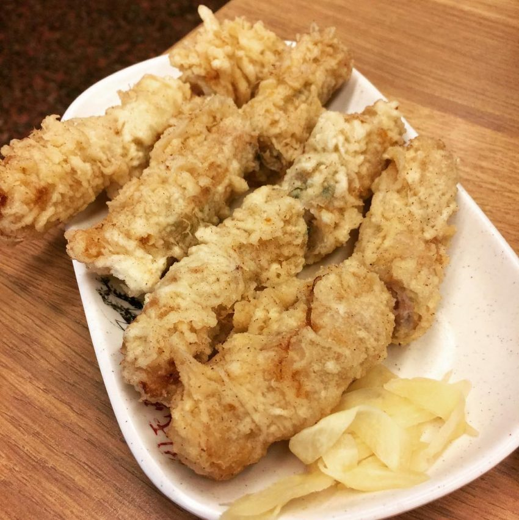
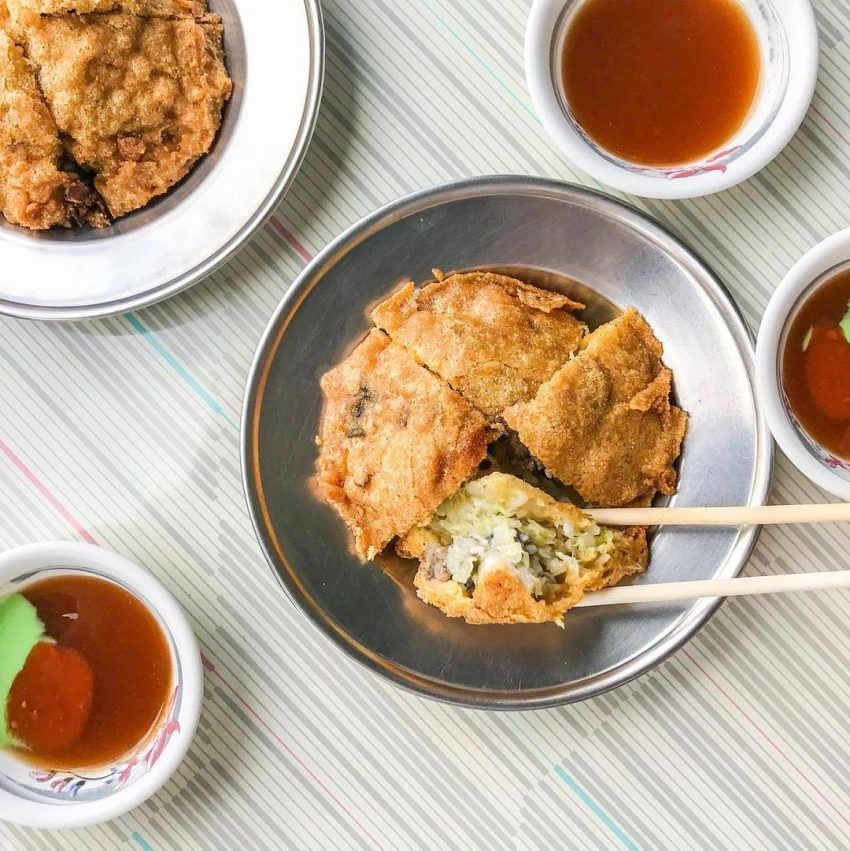
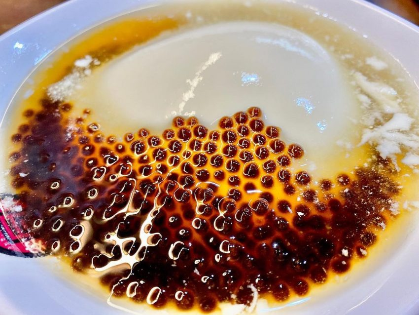

台南
臺南市是臺灣的發祥地，是全臺歷史最悠久的都市。西元1661年，鄭成功來台驅荷後，在臺南開府設治，屯墾拓殖，勵精圖治，當時中國大陸居民移居來臺者紛至沓來，商船雲集，市內商店櫛比，臺南都會之規模至是奠定。惟鄭王英年早歿，子經繼起，設聖廟、創學校，銳意經營，民生利賴。
至西元1683年，清國平臺，在臺南設臺灣府，為全臺首府。西元1885年，臺灣建省，遂改臺灣府為臺南府，是為臺南得名之緣由。直至十九世紀末期，臺南一直是臺灣政治經濟文化之重心，由於這層歷史淵源，故臺南市古蹟名勝特多，佔有臺灣最悠久歷史及文化發展地位，稱為文化古都，聞名全臺，實有其緣由也。
除了歷史文化特色之外，臺南更擁有如詩畫般的自然生態美景，及聞名遐邇的農漁產品特色美食。春天擁有聞名的「臺灣國際蘭展」於後壁鄉臺灣蘭花生物科技園區，讓您一探早春蘭花嬌羞的風情；每年農曆正月十五更有壯觀的鹽水蜂炮，在在吸引國內外人士前往觀賞；夏天寓教於樂的梅嶺賞螢、白河賞蓮及赤嘴園活動，讓您與孩子透過生態教育聯繫感情；涼爽的秋季，可以到東山一嚐香醇的阿拉比卡咖啡；到了冬天還可以到關子嶺感受泥漿溫泉，讓疲憊的心在溫泉鄉得到解放。
這般的臺南之美，美得有如活生生的歷史博物館，美在那一望無垠的田園風光，美在淳樸及熱情的人心，值得您細細品味。
周氏蝦捲
(台南市安平區安平路408-1號)
提到台南美食大家絕對會想到「周氏蝦捲」，至今中南部各地都可見到的周氏蝦捲，
其實總店就在安平喔！選用肉質鮮嫩多汁的火燒蝦、加入青蔥、魚漿等候將外皮炸得酥脆，
就成為了飄香五十餘年的蝦捲了。

東興蚵嗲
(台南市安平區古堡街1號)
位於海港邊的安平真是海鮮吃不完，中南部必吃傳統小吃「蚵嗲」在安平也有一家
週末常常大排長龍的「東興蚵嗲 」喔！招牌的蚵嗲裡面包入新鮮的牡蠣、清甜的高麗菜、一點點的豬
肉絲，裹上特製的粉漿酥炸，一定要記得搭配特別的甜中帶辣的醬油及芥末，一顆只要銅板價，邊走
邊逛安平老街也很適合。

同記安平豆花 總店
(臺南市安平區安北路433號)
台南的冰品甜品也是多到令人飲恨自己胃太小，而來到安平玩一定要吃一下
這家可說是台南豆花代表的「同記安平豆花」總店。單純黃豆香味的白豆花綿密細緻，配上蔗
糖熬煮的傳統糖水後甜而不膩，再加上可任選的配料紅豆、小粉圓等，簡單的古早味就這樣成
為了安平的名產。
